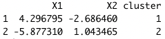
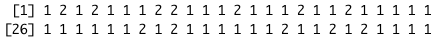
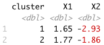
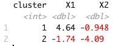

K-means
Introduction
For this assignment, you will implement the two-means clustering algorithm that we learned in class. The algorithm iterates between two steps, so the implementation will ask you to create two functions that perform these step. You will then call/use these two functions in your code.
Because this implementation has many steps, there are some provided “code checks” along the way. After each part of this implementation, you should verify that your code is working properly.
Your code should be as reproducible as possible!
Creating functions
To get started, we will need some data. In the following, I generate \(n = 50\) observations with \(p=2\) features each. The data are generated to have two true clusters: the first 25 observations are in cluster 1 and the second 25 observations belong to cluster 2. I also add an id column to keep track of the observation’s index. Take a look at df to see the data.
We will run 2-means clustering.
Part 1: defining variables
Create/store three variables:
- \(n\): the number of observations
- \(p\): the number of features
- \(K\): the number of clusters
# your codePart 2: formatting
The data frame df currently only has the features and id for each observation. However, because \(K\)-means re-assigns each observation to a cluster, we should add another column to df:
cluster: holds the cluster assignment of the observation
Because we haven’t yet assigned observations to clusters, simply assign the first half of the observations to cluster 1, and the second half to cluster 2. This literally means the first and second halves of the observations in df as it currently looks (i.e. do not assign the clusters based on id).
Note: we won’t use these clusters yet, but it’s good to have a data frame with all variable/columns defined prior to running the algorithm.
# your codePart 3: obtain initial centroids and store into a data frame
As discussed in class, there are many ways we could initialize the centroids. For the sake of getting the code running, for now you can simply take the first \(K\) observations as your centroids. Create a data frame called centroid_df that has \(K\) rows and the following \(p+1\) columns:
cluster: which of the \(K\) clusters the centroid corresponds to. This is arbitrary, so simply assignclusterto be 1, 2, … K to each centroid.- the remaining \(p\) columns should hold the \(p\) feature values
You might want to consider slice()-ing or indexing the original df data frame.
# your codeYour centroid_df data frame should look like this:

Part 4: re-assign step
Write a function called get_clusts() that finds the nearest centroid to each observation. Specifically, you should return a vector of the new cluster assignments. I suggest passing in the following arguments into your function:
n: the number of observationscentroids: a \(K \times p\) data frame of the centroids’ feature values onlyX: an \(n \times p\) data frame of the observed data’s feature values onlySome helpful hints:
- You will most likely want to write a
forloop in this function - To calculate the Euclidean distance between a vector
xanother vectory, you can paste in your Euclidean distance function that you created into the code chunk at the top of the document. Then you can use your distance function in your implementation - You may assume there aren’t any ties in distance!
- You will most likely want to write a
get_clusts <- function(_____){
# your code here
}If you run your get_clusts() function on the current data, you should return the following vector of cluster assignments:

Part 5: obtain centroids
We’re so close! Write a function called get_centroids() that finds the centroid of each cluster. You should pass in the df as the argument, and return a new data frame of centroids that is of the exact same format as the centroid_df you created in Part 3.
# your codeIf you run your get_centroids() function on the current data, you should return the following data frame (column order shouldn’t really matter):

Run the algorithm
Part 6: putting it all together!
Now, we need to put everything together into a single algorithm. We want to continue iterating back and forth between re-assigning and calculating centroids until we converge (i.e. when the cluster assignments stop changing). We can use a while loop for this! The syntax is while(condidition){} that says while the condition is TRUE, continue to run the loop. The caution here is that your loop could run FOREVER if you don’t have a line of code somewhere that will “break” the loop. IF THIS HAPPENS: you can always interrupt code in R by typing Ctrl + C.
At the bottom of the while loop, I provide code that will check if we have converged or not using the identical() function. Note that this function requires the two objects to be exactly identical (same ordering of columns, rows, column names, etc.)
To test your code, I suggest stepping through each line code of within the while loop one-at-a-time and then going back to the top of the loop and stepping through the code again, rather than run the entire loop at once. Once you’re happy with it, uncomment where I set flag <- TRUE above the while() loop, and run your loop!
Be careful about the inputs/arguments that each function expects!
# define flag = T
while(flag){
# TO DO: obtain new clusters
# TO DO: replace the clusters in df with the new clusters obtained above
# TO DO: obtain centroids of new clusters; store into a data frame called centroid_df_new
# check if centroid assignments have changed
if(identical(centroid_df_new, centroid_df) == TRUE){
# if no: set flag = FALSE, and break out of loop
print("done")
flag <- F
} else{
# if yes: need to continue iterating
print("centroids:")
print(centroid_df_new)
centroid_df <- centroid_df_new
}
}If you run your algorithm given the same data and initial centroids as described above, your final centroids should be (note: the cluster value is arbitrary):

Part 7: Visualize!
Using df, plot the observations by their features and color by the final cluster assignment. Use centroid_df to add the centroids to your plot, and use the shape aesthetic to denote whether an observation was clustered into a correct group. Recall that the observations with id 1-25 were truly a cluster, and those with id 26-50 were truly another cluster.
What do you notice about the observations that are incorrectly clustered, if any?
Submit
Don’t forget to set eval = TRUE in all the code chunk headers before you submit! Knit + commit + push one last time, then submit the PDF to Canvas.